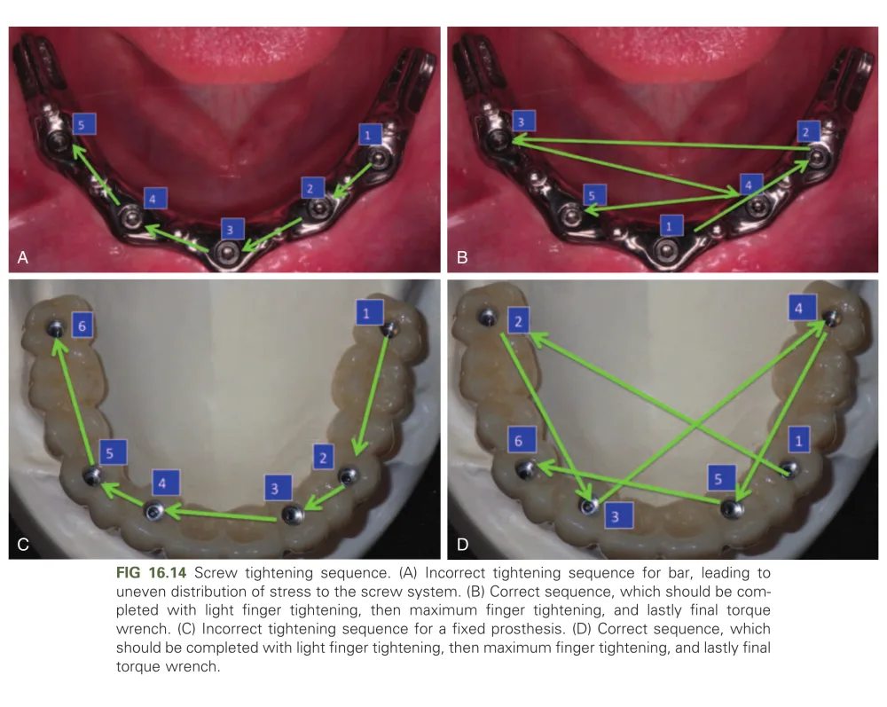
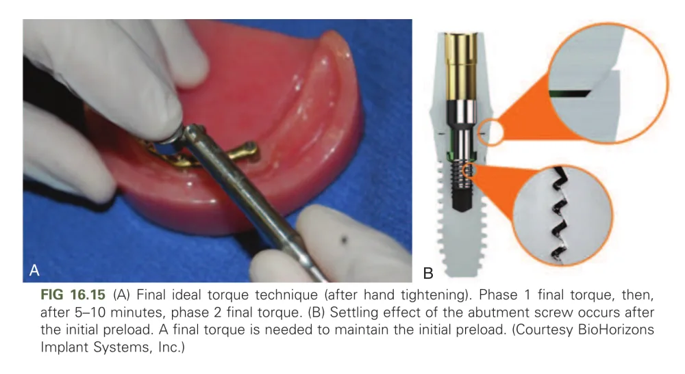
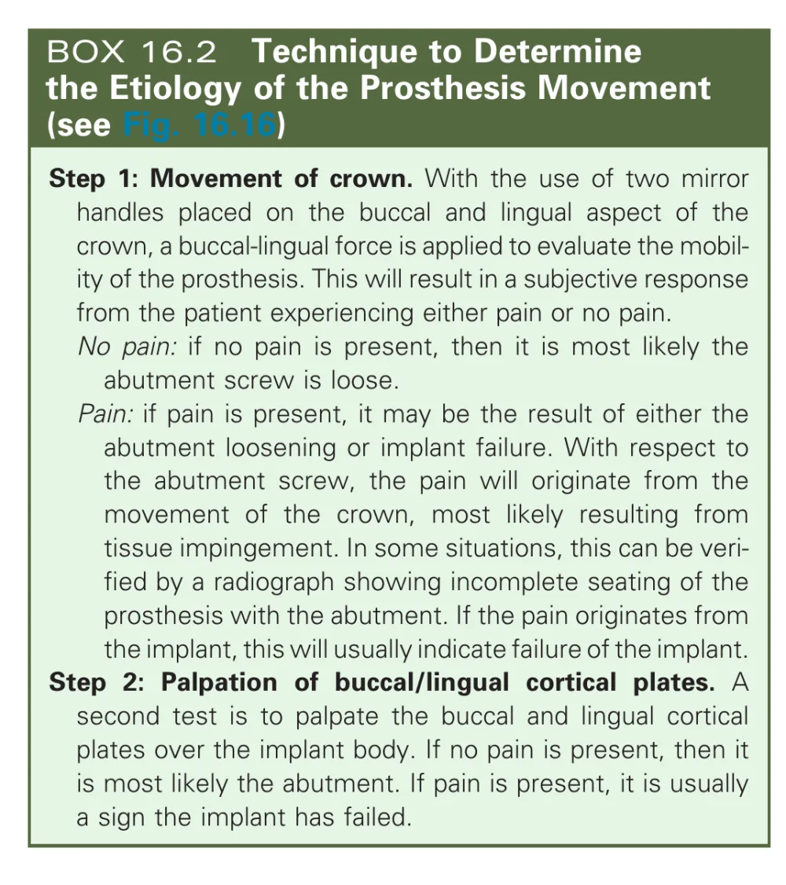

نسخه استخراجشده؛ ترجمه یا تأیید علمی انجام نشده است. وضعیت: captured
پیشبار ایدهآل: «نیروی تورک ایدهآل بر یک پیچ اباتمنت بر حسب سازنده متفاوت است و ممکن است از ۱۰ تا ۳۵ نیوتنسانتیمتر باشد.» و این پیشبار را متغیرهای زیادی تعیین میکنند: جنس پیچ، طراحی سر پیچ، جنس اباتمنت، سطح اباتمنت، و روانکنندهی احتمالی.
و پروتکل استاندارد چهارگامی:
و یک یادداشت برای موارد پرنیرو: «برای مواردی که نیروی افزایشیافته انتظار میرود، پیچ ایمپلنت ممکن است بار سومی پس از ۳۰ تا ۶۰ روز دوباره تورک شود.»
اما چرا گام چهارم لازم است؟ پاسخ در «اثر نشست» است:
نشست (Settling) اصطلاحی است برای «اثر ساییده شدن و نزدیکتر جا افتادن اجزای مختلف ایمپلنت». بینظمیهای جزئی روی یا درون یک ریختهگری میتوانند ارتفاع اندکی در ریختهگری یا سر پیچ ایجاد کنند. در طول زمان، میکروموومنت این بینظمیها را میساید و قطعات نزدیکتر جا میافتند.
و اینجا مشکل زاده میشود: «این نشست، نیروی پیشبار بر پیچ پروتزی را شل میکند و احتمال شل شدن پیچ را بیشتر میکند.»
و مقدارش: «این آسودگی جاگیری (embedment relaxation) یا از دست رفتن پیشبار، تقریباً ۲ تا ۱۰ درصد پیشبار اولیه در همان چند ثانیه یا دقیقهی نخست پس از سفت کردن نشان داده شده است.»
و همین دقیقاً دلیل گام چهارم است: «این استدلالِ آن است که پروتکل بالا شامل یک تورک مجدد پس از ۵ تا ۱۰ دقیقه باشد تا پیشبار از دست رفته بهدلیل نشست بازیابی شود.» — یعنی تورک دوم یک احتیاط اضافی نیست؛ جبران یک افت اندازهگیریشده است.
و توالی سفت کردن در پروتزهای چندواحدی — که یک اصل مهندسی است:
«تورک باید بهصورت تدریجی میان همهی پیچها اعمال شود، بهطوری که هیچ پیچی بهطور کامل سفت نشود.»
و منطقش: «این بر این واقعیت استوار است که یک پروتز چندواحدی بعید است «کاملاً» پسیو باشد.» و پیامد توالی نادرست: «یا مقدار ناکافی یا بیش از حد تورک روی یک رزوهی پیچ خاص گذاشته میشود.»
و دو سرنوشت متفاوت:
حالا موارد ۱۲ و ۱۳ کادر ۱۶٫۱ معنا پیدا میکنند: هر دو در فهرست بودند؛ کمتورکی بیشتر به شل شدن میرسد، و پرتورکی افزون بر شل شدن، با تغییر شکل دائمی پیچ ممکن است به شکستن برسد. تورک یک پنجره است، و هر دو لبهاش هزینه دارد.
و توالی درست (شکل ۱۶٫۱۴): نخست سفت کردن سبک با انگشت در همه، سپس حداکثر سفت کردن با انگشت، و در پایان تورکرنچ نهایی.
و یک نکتهی ساده که دقت تورک را بالا میبرد:
تورک در شرایط مرطوب: «مطالعات نشان دادهاند هنگام جاگذاری و تورک کردن پیچهای اباتمنت، مقادیر تورک دقیقتری در شرایط مرطوب نسبت به خشک حاصل میشود. میتوان از سالین برای روان کردن پیچ پیش از اعمال پیشبار استفاده کرد تا دقت پیشبار به حداکثر برسد.»


بیمار با یک پروتز ایمپلنتی لق مراجعه میکند. نخستین پرسش این است: پیچ شل شده یا ایمپلنت شکست خورده؟ این دو، دو درمان کاملاً متفاوت دارند.
و کادر ۱۶٫۲ یک آزمون دو مرحلهای میدهد که تنها به دو دستهی آینه نیاز دارد:
گام ۱ — حرکت تاج. با دو دستهی آینه که روی سطح باکال و لینگوال تاج گذاشته میشوند، یک نیروی باکولینگوالی اعمال میشود تا تحرک پروتز ارزیابی شود. نتیجه یک پاسخ ذهنی از بیمار است: درد یا بیدردی.
گام ۲ — پالپاسیون پلیتهای کورتیکال باکال و لینگوال. آزمون دوم، پالپاسیون پلیتهای کورتیکال باکال و لینگوال روی بدنهی ایمپلنت است.
به منطق این آزمون دقت کن: گام ۱ به تاج نیرو میدهد و گام ۲ به استخوان. اگر درد با فشار بر استخوان بیاید، مسئله در رابط استخوان-ایمپلنت است نه در اتصال پیچی. دو آزمون، دو لایهی متفاوت از سیستم را میآزمایند.
و اگر ایمپلنت واقعاً شکست خورده باشد: «تحرک ایمپلنت نشاندهندهی شکست ایمپلنت است و برداشتن فوری را ضروری میکند. رادیوگرافی ممکن است یک رادیولوسنسی محیطی را آشکار کند.» و سپس محل باید پس از ترمیم کافی برای نیاز به گرافت، جایگذاری ایمپلنت، یا تغییر در طرح درمان پروتزی دوباره ارزیابی شود.
و اگر پیچ اباتمنت شل شده و تاج سمانی است؟ دو گزینه داری:
گزینهی ۱ — برداشتن تاج سمانی. «بسیار چالشبرانگیز است.» و دلیلش: «نیروی ضربهای که بر تاج متحرک اعمال میشود، بهدلیل پیچ شل مستهلک میشود» — یعنی ابزار کراونریموور کار نمیکند چون انرژی در لقی هدر میرود.
و این ممکن است به آسیب رزوههای داخلی بدنهی ایمپلنت بینجامد. افزون بر آن، وقتی مارجین تاج سابجینجیوال است، دسترسی دشوار است، و در تراکمهای ضعیفتر استخوان، استفادهی افراطی از کراونریموور ممکن است به از دست رفتن رابط استخوان-ایمپلنت بینجامد.
گزینهی ۲ — که «ایمنترین و قابلپیشبینیترین» راه است: «ساختن یک دسترسی اکلوزالی و تبدیل تاج سمانی به یک تاج پیچشونده.» و نخستین گام این کار: ارزیابی و تعیین موقعیت و زاویهی پیچ اباتمنت (باکولینگوالی و مزیودیستالی) — که «یک رادیوگرافی داخلدهانی اغلب کمککننده است».
و اکنون سه عارضهی حین عمل که هنگام قرار دادن اباتمنت رخ میدهند:
یکم — اباتمنت کامل ننشسته. «وقتی یک اباتمنت درون ایمپلنت تورک میشود، باید دقت شود که اباتمنت کاملاً در هگز ایمپلنت بنشیند.» گاهی بافت یا استخوان مانع نشستن کامل میشود و یک میکروگپ ایجاد میکند.
و پیامد میکروگپ: «یک بازشدگی یا میکروگپ به تجمع باکتریایی میانجامد، که به عفونت و تحریک بافت نرم منجر میشود. اگر درمان نشود، شکست پیچ یا ایمپلنت ممکن است رخ دهد.»
و پیشگیری: «وقتی ایمپلنت بهطور معناداری سابجینجیوال است، تعیین این موضوع دشوار است. همیشه باید یک رادیوگرافی برای تأیید نشستن کامل گرفته شود.»
و درمان بر پایهی علت: جاگذاری نادرست → اباتمنت را بردار، دوباره بگذار، و با رادیوگرافی جدید تأیید کن، تحت فشار قرار گرفتن بافت → بافت را با تیشو پانچ بور یا اسکالپل بردار، تداخل استخوان → استخوان مانع را با کورت یا پروفایلینگ بور بردار. و در هر سه حالت، نشستن را با رادیوگرافی جدید تأیید کن.
دوم — درد هنگام قرار دادن اباتمنت. دو علت: تحت فشار قرار گرفتن بافت — «بهدلیل نبود فیبرهای دایرهای، فروریختن بافت پس از برداشتن اکستنشن پرموکوزال بسیار شایع است»؛ و شکست ایمپلنت.
و پیشگیریاش یک نکتهی زمانبندی است: «برای کاهش احتمال فروریختن بافت، قرار دادن اباتمنت باید بدون تأخیر پس از برداشتن اکستنشن پرموکوزال کامل شود. هرچه بازهی زمانی که اباتمنت بیرون است طولانیتر، احتمال تحت فشار قرار گرفتن بافت بیشتر.»
سوم — درد هنگام اعمال تورک. افزون بر دو علت پیشین، یک علت سوم هم در کار است:
کیفیت ضعیف استخوان: «اگر یک پیچ اباتمنت در کیفیت ضعیف استخوان تورک شود، ممکن است یک نیروی بدون تکیهگاه اعمال شود که استئواینتگریشن ایمپلنت را از بین ببرد.»
و راهحلش — کانترتورک: «هنگام اعمال تورک بر یک ایمپلنت، همیشه اباتمنت را با همستات خمیده نگه دار یا از یک جیگ تأیید آکریلی استفاده کن. این به تثبیت اباتمنت کمک میکند» — و نیروهای برشی را بر بدنهی ایمپلنت کاهش میدهد.
و این یونیت را با یک قاعدهی ساده ببند: تورک یک نیروی چرخشی است؛ اگر چیزی آن را در سوی مقابل نگه ندارد، آن نیرو به رابط استخوان-ایمپلنت میرسد. کانترتورک، اجازه میدهد پیچ سفت شود بیآنکه ایمپلنت بچرخد.
